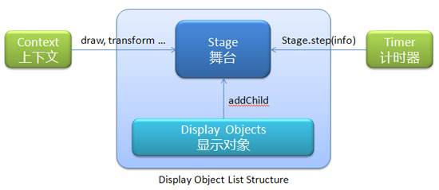

QuarkJS - An HTML5 Game Framework
首页
源码下载
API文档
使用指南
作品演示
使用指南
快速开始 - Getting Started
基础架构 - Infrastructure
上下文 - Context
显示对象 - DisplayObject
事件处理 - Handling Events
实例分析
跳跃的小松鼠
基础架构
Quark的基础架构图：

显示对象列表（Display Object List）
显示对象列表是Quark中参照Actionscript3中的显示对象列表设计的一套显示和管理对象的结构。他跟HTML的DOM树结构非常相似。
显示对象列表的根是舞台stage，可以通过调用 stage.step() 方法来更新显示对象列表。
上下文（Context）
Context在Quark中负责对象的渲染，还包括位移、旋转、缩放等变换。参照CanvasRenderingContext2D的设计思路，我们实现了CanvasContext和DOMContext。
CanvasContext采用canvas渲染，DOMContext采用DOM和CSS的 background 和 transform(3d) 进行渲染。
Context有一个画布canvas属性，这是显示对象将被渲染到的地方。canvas属性是一个 HTMLCanvasElement 或 HTMLDivElement 对象。
Context会被注入到舞台stage里，显示对象列表更新的时候会调用context的 transform() 进行变换，再调用 draw() 方法绘制对象。
计时器（Timer）
Timer是一个计时器。在Quark中用来驱动显示对象列表的更新和渲染。
Timer通过 addListener() 方法来注册侦听器(侦听器需实现 step() 方法)。
显示对象列表、上下文、计时器三者分工合作，共同组成了Quark Base的架构。